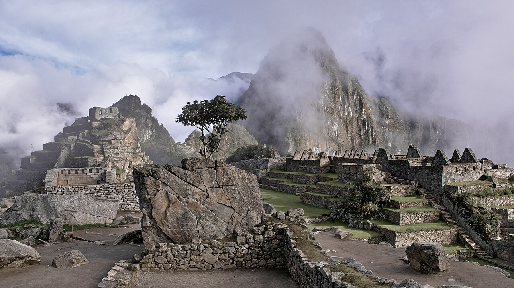
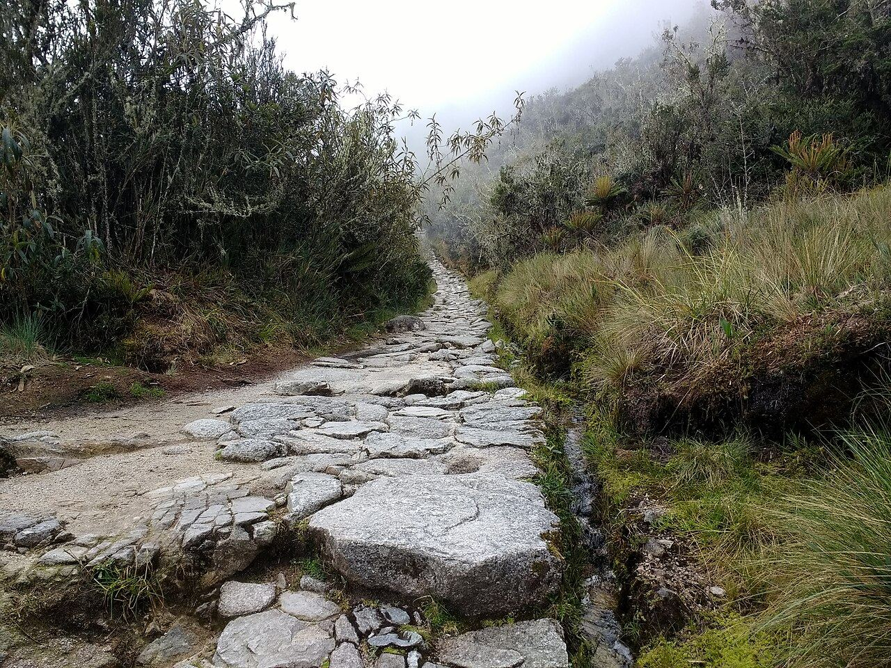
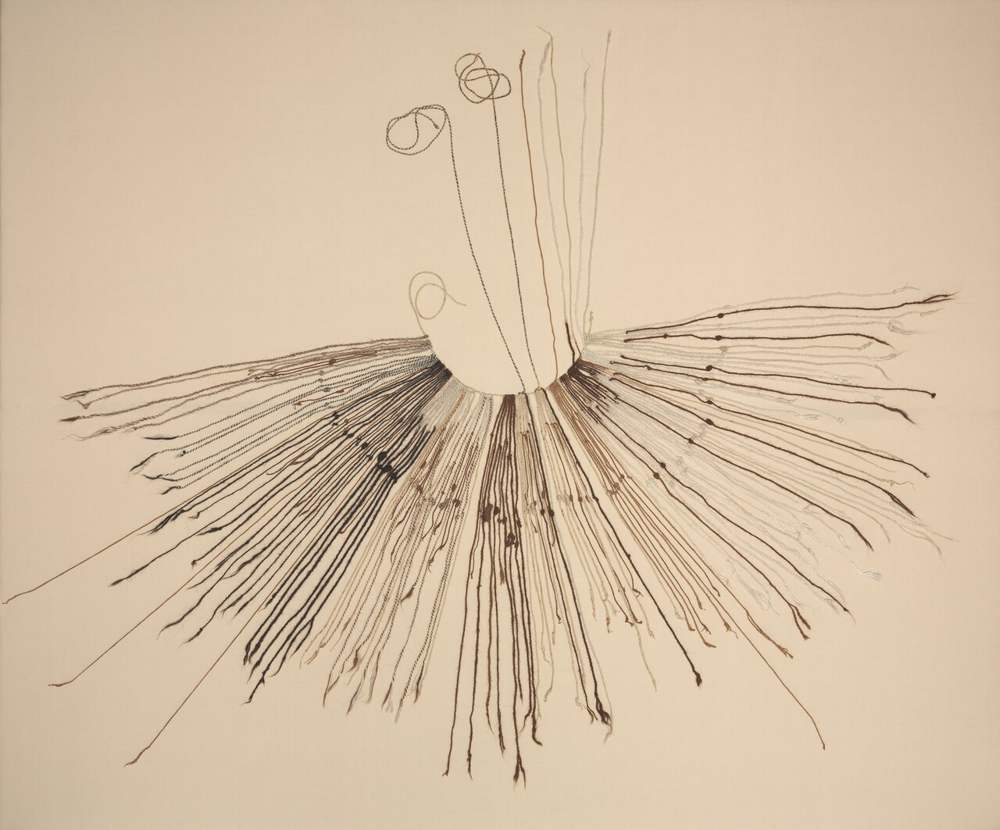
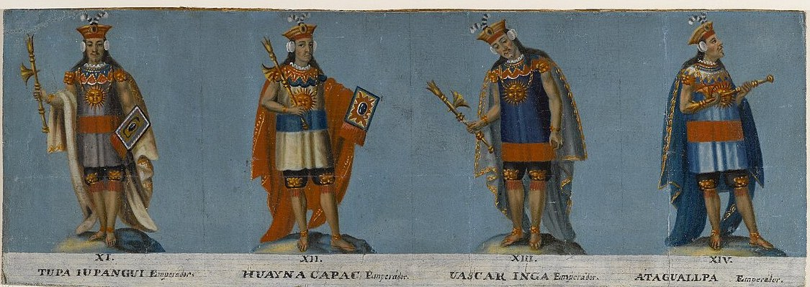
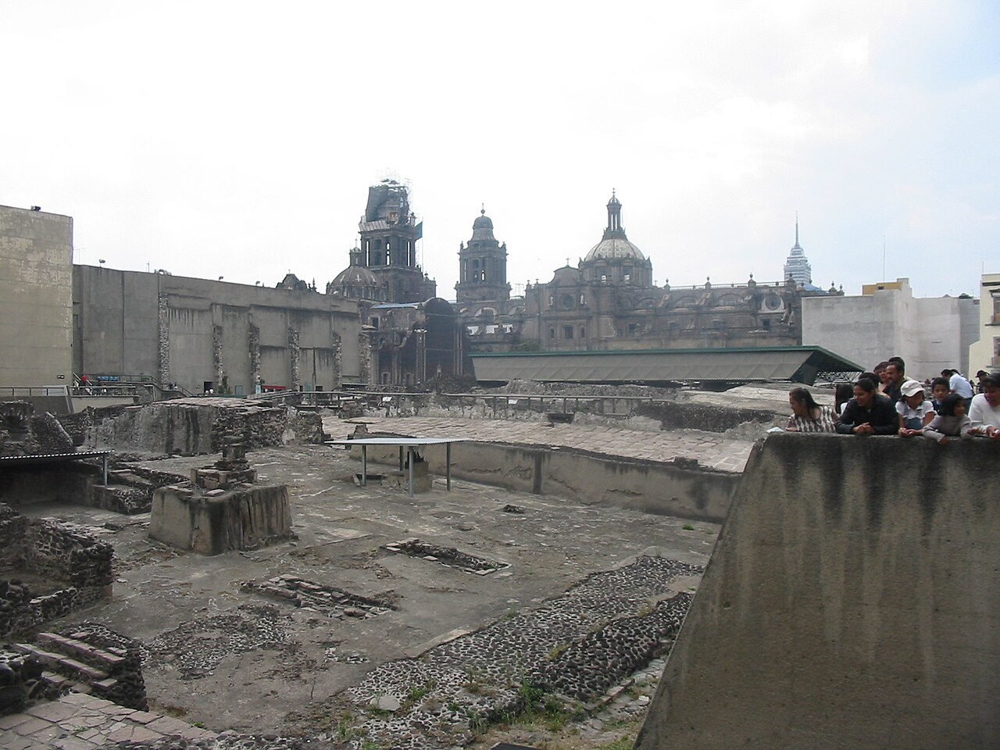
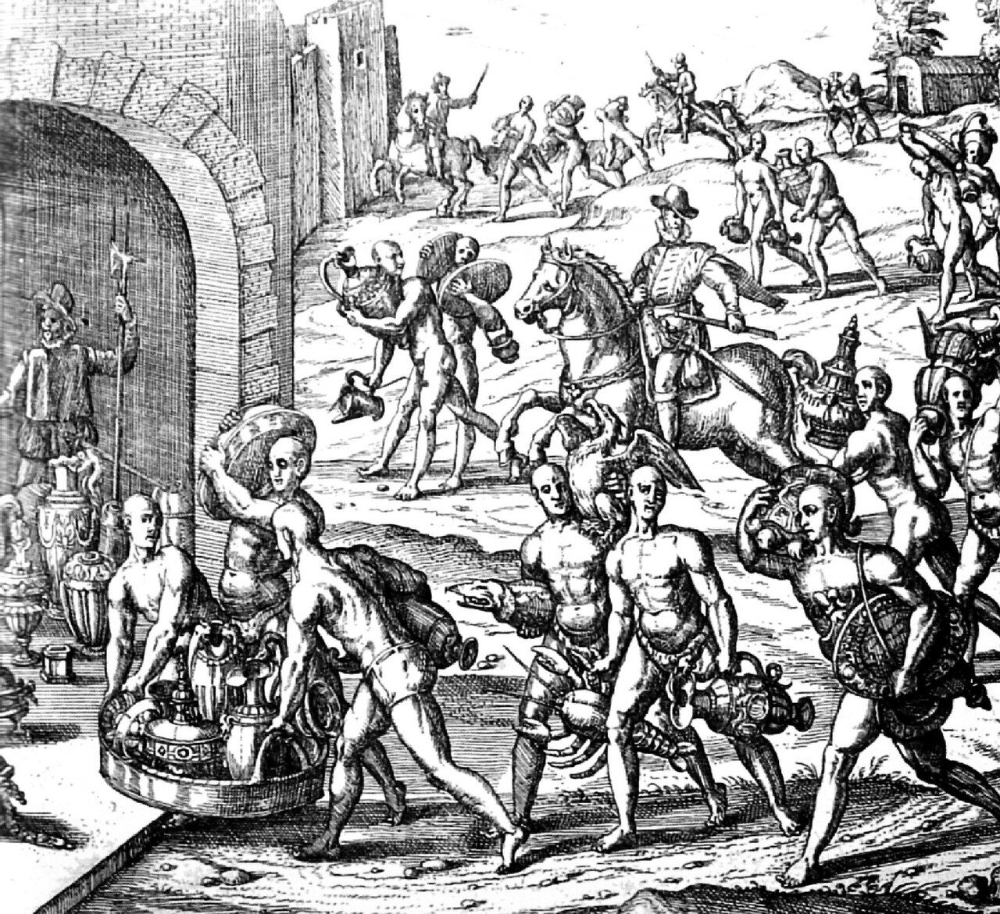
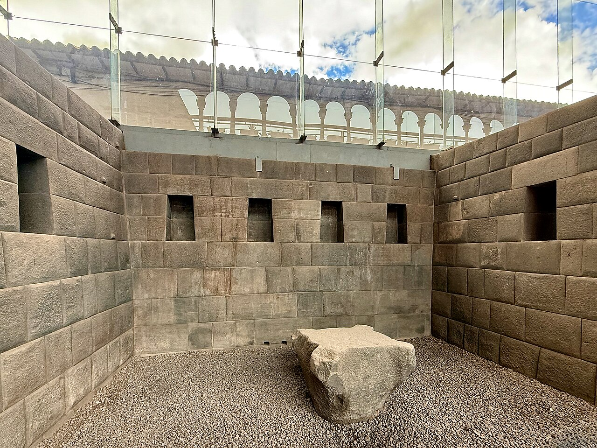

歴史・地理 History & Geographyインカ帝国は、 なぜ わずかな スペイン人に 滅ぼされた？ 1532年11月、約8万の兵を持つインカの皇帝が、たった168人のスペイン人に捕らえられました。しかもスペイン人より先に、見えない敵が帝国に入りこんでいました。山の道の地図と、約10年に詰まったできごとの年表、金で満たした部屋の図で、その日までをたどってみませんか。
2026.11.11 UP 約8分で読める 文：SOMOSOMO編集部
写真：マチュ・ピチュ／Tomas Sobek（2016年、CC0）
Previously
前回は、1347年にジェノヴァの船で届いたペストで、ヨーロッパの人の4分の1から半分ほどが亡くなったあとの話でした。働き手の取り分が増え、古代に学ぶ芽に、メディチ家の富と東の学者、印刷機が重なってルネサンスが花開きます。
丸屋根の完成は1436年。ペストはその後も来ていました。丸屋根ができて間もない1438年ごろ、大西洋の向こうのアンデスで、ある国が広がり始めていました。
アンデスの山あいの町カハマルカ（いまのペルー北部）、1532年11月16日の夕方。広場を囲む長い建物の中に、スペイン人たちが馬と大砲を隠して待っていました。そこへ、オウムの羽で飾った輿（こし）に乗って、インカの皇帝アタワルパが数千人の供を連れて入ってきます。
町の外には、内戦に勝ったばかりの約8万の兵がいました。対するスペイン人は、歩兵106人と騎兵62人、合わせて168人です。ところがこの日を境に、南アメリカの西側をまとめた約1,000万人の帝国が崩れていきます。これほどの差がありながら、なぜインカは滅ぼされたのでしょうか 。
In a word
病と内戦 で割れていた帝国の、皇帝ひとり をねらって捕らえたから。
01
Roads and Knots
インカは、 文字も鉄も 車輪もなしに 大帝国を 築いた
インカのはじまりは、アンデスの谷間の町クスコでした。いまのペルー南部、標高約3,400mの高地です。1438年ごろ、クスコに攻めこんだチャンカの人々を退けた王が、パチャクティ（「世界の転換」の意味）と名のり、国を一気に広げ始めます。
ただし、この年はのちのスペイン人の記録から割り出したもので、遺跡に残る炭素から年代を測る方法では、もう少し早いとみる研究もあります。インカの人々は、年を数えて記録していませんでした。
パチャクティから3代のうちに、インカは北のいまのエクアドルから、南のいまのチリまでを従えます。1448年に約40万km²だった国は、1528年には約180万km²、日本の5倍ほどの広さになりました。
この国をつないだのが、カパック・ニャンと呼ばれる道の網です。長さは合わせて約4万km。山の斜面には石の階段を刻み、谷には吊り橋をかけ、1日歩くごとに、食べ物と寝る場所のある宿を置きました。

石を敷いた山の道 マチュ・ピチュへ向かう「インカ・トレイル」の一部です。平たい石がすき間なく敷かれ、わきには水を流す溝もあります。こうした道が、帝国の端から端までのびていました。写真：Part of the Inca Trail ／Mx. Granger（2017年、CC0）
道には約2.5kmごとに小屋があり、チャスキと呼ばれる走る使者が待っていました。知らせを持って次の小屋まで走り、次の使者に渡します。このリレーで、1日に最大300kmほども知らせを運べたといいます。
ふしぎなことに、インカには文字がありませんでした。代わりに使ったのが、キープ（「結び目」の意味）です。ひもの結び目の形と位置で、10進法の数を記録しました。税や人口の記録も、このひもで管理していました。

結び目で数を残すキープ 1400〜1532年ごろのインカのキープです。上の太いひもから、たくさんのひもが垂れ下がっています。ひもの色や結び目の位置に、数の意味がありました。写真：Inka Khipu (Fiber Recording Device) ／作者不明（1400〜1532年ごろ、CC0。クリーブランド美術館蔵）
税は、物よりも働く時間で納めました。ミタ（「順番」の意味）と呼ばれるしくみで、人々は1年のうち決まった日数、国のために道や橋、段々畑、とりでを造ります。鉄の道具も車輪もなく、荷を運ぶのは人と、リャマ（ラクダの仲間）の背でした。
扉の写真のマチュ・ピチュも、標高2,430mの尾根に石を積んで造られました。1450年ごろ、パチャクティの離宮として建てられたと、多くの考古学者が考えています。
この道も、ひもの記録も、働き手の割り当ても、すべてクスコの皇帝のもとで動いていました。その道を、のちにスペイン人も進むことになります。
02
Before the Spaniards
スペイン人より 先に、 病が 帝国を 割っていた
1492年にコロンブスが大西洋を渡ってから、スペイン人はカリブ海の島々や中央アメリカに町を造っていました。そこから持ちこまれた病が、人から人へと南へ広がります。天然痘（高い熱と発疹の出る、うつる病気）とみられる病は、1524年にはアンデスに届いていた、という研究があります。
ヨーロッパでは、天然痘は何百年も前からある病で、かかって治った人も多くいました。アメリカ大陸の人々にとっては、初めての病です。インカの人々は、スペイン人の姿を見る前から、病に倒れ始めていました。
1527年ごろ、11代目の皇帝ワイナ・カパックが、帝国の北の地方（いまのエクアドル）で亡くなります。跡継ぎの長男も、続いて亡くなりました。皇帝の死因をヨーロッパから来た病とする説は有力ですが、記録はばらばらで、異論もあります。
跡継ぎを失った国は、2人の息子に割れました。都クスコにいたワスカルと、北のキトで父の精鋭の軍を握っていたアタワルパです。1529年から、兄弟は皇帝の座を争って戦いました。

父と、争った兄弟 19世紀はじめのペルーで描かれた、インカの皇帝の肖像画の一部です。左から2人目が父のワイナ・カパック、3人目がワスカル、右端がアタワルパ。姿は後の時代の想像です。絵の下の番号は数え方が違い、ワイナ・カパックは XII とされています。写真：Four Inca Kings - Tupac Yupanqui, Huayna Capac, Huascar Inca, Atahuallpa （部分）／作者不明（19世紀はじめ、パブリックドメイン。ブルックリン美術館蔵）
内戦はアタワルパの勝ちでした。1532年の前半、アタワルパの将軍たちがクスコの近くでワスカルの軍を打ち破り、ワスカルを捕らえます。新しい皇帝アタワルパが北の町カハマルカにとどまっていたとき、海の方から見知らぬ一行が近づいてきました。
03
Cajamarca
168人は、 皇帝ひとりだけを ねらった
一行を率いたのは、スペインのフランシスコ・ピサロです。貧しい家に生まれ、字が読めませんでした。パナマに住み、1520年代に2度、船で南の国を目ざしましたが、うまくいきませんでした。
そのころ北のメキシコでは、1521年、同じスペインのコルテスが、アステカ王国の都テノチティトランを落としていました。湖の島に築かれた、石の神殿のそびえる都です。

大神殿の跡と大聖堂 アステカの都テノチティトランの大神殿（テンプロ・マヨール）の跡です。いまはメキシコシティの中心にあり、奥には町の大聖堂が見えます。写真：TemploMayorCathedralMexicoCity ／Thelmadatter（2008年、パブリックドメイン）
1529年、ピサロはスペイン王から、南の地を征服する許しを得ます。3度目の旅でトゥンベスの岸に上がり、1532年、いまのペルー北部にサン・ミゲルという町を造り、9月に168人で山へ向かいました。
Fig.01 インカの道と、 ピサロの 一行の道
太平洋
アンデス山脈
クスコ
カハマルカ
キト
パナマ
トゥンベス
サン・ミゲル
この話のおもな舞台
インカのおもな町
スペイン人が通った町
インカの山の幹線道路（おおよそ）
ピサロの一行の道（1531〜32年、おおよそ）
見どころは、ピサロの一行が岸から山を登り、インカの幹線道路の上にあるカハマルカへ入ったこと。道はさらに南の、いまのチリやアルゼンチンまで続いていました。道はおおよそです。地図は Natural Earth（パブリックドメイン）から作りました。
アタワルパは貴族を使いに送り、2日のあいだスペイン人の武器や馬を調べさせました。そして、168人なら恐れることはないと考え、カハマルカに招きます。スペイン人を捕らえて、馬や武器の技を手に入れるつもりだった、と伝える記録もあります。
11月16日、アタワルパは広場に入りました。供の人々は数千人で、ほとんど武器を持っていません。修道士が進み出て、キリスト教の祈りの本を渡しました。アタワルパがそれを地面に投げると、ピサロが合図を送ります。
大砲と鉄砲が鳴り、鈴をつけた馬が建物から飛び出しました。インカの人々にとって、鉄砲は初めて見る武器です。逃げまどう供の人々が数千人殺され、アタワルパは捕らえられました。町の外の大軍も、散り散りになります。
スペイン人の鉄の剣とよろいは、アンデスの武器のほとんどを防ぎました。それでも、何万の兵とまともに戦えば、168人に勝ち目は薄かったでしょう。ピサロがねらったのは、皇帝ひとりでした 。王を捕らえるのは、スペイン人がカリブ海の島々でもくり返してきたやり方です。
04
The Ransom
金で満たした 部屋も、 皇帝の命を 救わなかった
とらわれたアタワルパは、スペイン人が金銀を欲しがるのを見て、取り引きを持ちかけます。長さ約6.7m、幅約5.2mの部屋を、2か月のうちに高さ約2.4mまで、金で1回、銀で2回満たす、というものでした。
Fig.02 アタワルパが 約束した 「金の部屋」
金で1回、銀で2回。期限は2か月
部屋を正面から見た図（奥行きは約5.2m）
ここまで金で満たす
床から高さ 約2.4m
長さ 約6.7m
人 約1.7m
見どころは、赤い部分が大人の背の高さをこえていること。この高さまで金で1回、さらに銀で2回満たすという約束でした。寸法は記録にもとづく約束の大きさで、図は縮尺をそろえています。
1532年12月から、クスコなど帝国の各地から、金の器や飾りが運ばれてきます。クスコの太陽の神殿からは、壁を飾った金の板も持ち出されました。1533年5月までに、スペイン人は求めた宝をすべて受け取り、溶かして延べ棒にします。

運びこまれる金と銀 アタワルパの身代金の金銀が運ばれる場面を描いた、16世紀の銅版画です。つぼや皿をかついだ人々が、門の前へ向かっています。ヨーロッパの版画家の想像による絵です。写真：Oro y plata del Inca ／テオドール・ド・ブリー（16世紀、パブリックドメイン）
そのあいだに、とらわれていたワスカルが、アタワルパの命令で殺されます。宝がそろうと、スペイン人は形だけの裁判を開き、アタワルパにワスカルを殺した罪や、スペイン王に背こうとした罪を着せました。
アタワルパは1533年の夏、洗礼（キリスト教徒になる儀式）を受けたうえで処刑されます（日付は7月26日とも8月29日ともいわれます）。
1533年11月15日、ピサロの軍は都クスコに入りました。カハマルカに着いた日から、ちょうど1年後のことです。ピサロはやがて、アタワルパの異母弟マンコ・インカを、自分たちに従う皇帝に立てました。
金をはぎ取られた太陽の神殿コリカンチャの上には、のちにスペインの修道院が建てられます。いまもその建物の下に、インカのすき間のない石組みが残っています。

修道院の下に残った石組み クスコのコリカンチャに残る、インカの部屋です。きっちり切りそろえた石が、すき間なく積まれています。インカの建物に多い、台形のくぼみ（壁龕）も並んでいます。写真：Qurikancha room ／WMrapids（2025年、CC0）
ふり返ると、理由はいくつも重なっていました。病が先に人々と皇帝の家族を倒し、跡継ぎ争いが国を2つに割りました。勝ったばかりの皇帝は、見たことのない馬と鉄砲を前に、相手の数を見くびりました。そして皇帝を中心にまとまった国だったからこそ、皇帝を奪われた痛手は大きかった、ともいわれます。
Fig.03 病から クスコまでの 約10年（1524〜33年）
1520
1525
1530
1535
1521 アステカの都が落ちる1524 天然痘とみられる病がアンデスへ1527ごろ ワイナ・カパックが亡くなる1529〜32 ワスカルとアタワルパの内戦
1532.11 カハマルカで皇帝が捕らわれる1533夏 アタワルパが処刑される1533.11 スペイン人がクスコに入る
スペイン人の側の動き
インカの中のできごと
内戦
見どころは、病・皇帝の死・内戦・征服が、わずか約10年に詰まっていること。灰色の帯が内戦の時期です。点の位置は年数に比例します。
それでも、インカがすぐに消えたわけではありません。マンコ・インカは1536年にスペイン人に背いてクスコを囲み、やがてアンデスの東の山奥に移って、子どもたちの代まで戦い続けました。
05
By the Numbers
数字で見る 征服の時代
1万 5,000〜 4万人 約1,000万人の帝国を治めていた、インカの貴族の数（推計1万5,000〜4万人）。頂点は、ごく小さな集まりでしたInca Empire（Wikipedia）による
500万 〜 800万人 1520年、メキシコで最初の天然痘の流行により亡くなった人の推計の上限（下限は500万人）Spanish conquest of the Aztec Empire（Wikipedia）による
39年 アタワルパの死（1533年）から、インカの最後のとりでが落ちた1572年までInca Empire（Wikipedia）による
Here's the Fun Part
ここが面白い！「わずかなスペイン人」は、 わずかでは なかった
題の問いには、実は落とし穴があります。スペイン人の数は確かにわずかでした。けれども、カハマルカのあと、クスコへ進む戦いやその後の征服の戦いの多くで、そばには大勢の現地の人々がいました。インカに従わされていたカニャリやチャチャポヤなどの人々が、スペイン人の側について戦ったのです。
カニャリの人々は、内戦でアタワルパの軍に土地を荒らされ、多くが殺されていました。チャチャポヤの人々は、インカから自由になる好機と見ました。その中には、チャンカの人々もいたとされます。1438年ごろパチャクティに退けられ、インカが広がるきっかけになった、あの人々です。
アステカでも同じでした。1521年8月13日に都テノチティトランを落としたのは、コルテスの兵と、アステカと争っていたトラスカラなどの人々の連合軍です。3年の戦いで、コルテスについた現地の人々は20万人にのぼったかもしれないとされます。
スペインの武器は敵の列を崩すのには役立っても、それだけで国を征服できる力ではなかった、と見る歴史家もいます。大帝国を倒したのは、その帝国に従わされていた人々の力でもありました 。
次に「少ない数で大きな相手を倒した」という話を聞いたら、その少ない側のそばに、誰が味方していたのかを探してみてください。
To be continued
そもそもスペインの人々は、なぜ大西洋を渡ったのでしょうか。話はカハマルカの40年前にさかのぼります。1492年8月、スペインのパロスの港から、3隻の船が西へ向けて出ていきました。率いていたのは、ジェノヴァ生まれの船乗りコロンブスです。彼はなぜ、西へ向かったのでしょうか。
出典・参考
Battle of Cajamarca （Wikipedia 英語版）：1532年11月16日、オウムの羽で飾った輿、町の外の約8万の兵、鉄砲を初めて見たこと、馬の鈴、広場で数千人が殺されたことAtahualpa （Wikipedia 英語版）：1529〜32年の内戦、1532年9月に山へ向かったこと、歩兵106人と騎兵62人（168人）、使いの貴族が2日間スペイン人を調べたこと、カハマルカに招いて捕らえるつもりだったこと、バルベルデの祈りの本、身代金の部屋（約6.7m×5.2m、高さ約2.4m、金で1回・銀で2回、2か月）、ワスカルの殺害、反逆などの罪、洗礼と処刑（本文は7月26日、冒頭の生没年は8月29日とする）Spanish conquest of the Inca Empire （Wikipedia 英語版）：1448年の約40万km²から1528年の約180万km²への拡大（日本の約37.8万km²とくらべて約5倍は編集部の計算）、1529年の征服の許し、1532年のサン・ミゲル、1532年12月からの宝の運びこみと1533年5月、太陽の神殿の金の板、処刑を8月29日とする記述、1533年11月15日のクスコ入り、マンコ・インカ、1536年のクスコの包囲、よろいがアンデスの武器のほとんどを防いだこと、天然痘とみられる病が1524年にアンデスに届いたという説、ワンカ・カニャリ・チャンカ・チャチャポヤがスペイン側で戦ったこと、カニャリが内戦でアタワルパの軍に荒らされたこと、チャチャポヤが独立を望んだことInca Empire （Wikipedia 英語版）：アメリカ大陸で最大の帝国、タワンティンスーユ、1438年のパチャクティとチャンカ、文字・車輪・荷を引く動物・鉄なしで築かれたこと、貴族1万5,000〜4万人と約1,000万人（数字の欄）、天然痘が征服者より先に広がったこと、1572年に最後のとりでが落ちたこと（数字の欄）Pachacuti （Wikipedia 英語版）：「世界の転換」の意味の名、3代で広がったこと、1438年は植民地時代の記録から立てた年代で、炭素の年代測定はもっと早い時期を示すこと、インカが年を数えて記録しなかったことInca road system ・Chasqui （Wikipedia 英語版）：道の網が約4万km（推計に2万3,000〜6万kmの幅）、1日歩くごとの宿（タンボ）、約2.5kmごとの中継の小屋、1日に最大300kmQuipu ・Mit'a （Wikipedia 英語版）：「結び目」の意味、10進法で数を記録し税や人口の記録に使ったこと、ミタが「順番」の意味で、決まった日数の労働で道・橋・段々畑・とりでを造ったことMachu Picchu ・Cusco （Wikipedia 英語版）：標高2,430m、1450年ごろパチャクティの離宮として建てられたとされること、クスコの標高約3,400m、コリカンチャの跡に建てられたサント・ドミンゴ修道院Huayna Capac ・Inca Civil War （Wikipedia 英語版）：1527年ごろ帝国の北（トゥメバンバまたはキト）で亡くなったこと、ヨーロッパの病が死因とする説と異論、長男ニナン・クヨチの死、ワスカル（クスコ）とアタワルパ（キト）、1532年のワスカルの敗北と捕縛Francisco Pizarro （Wikipedia 英語版）：貧しい家の生まれで字が読めなかったこと、パナマ、2度の失敗した遠征、1529年の許しSpanish conquest of the Aztec Empire ・Fall of Tenochtitlan （Wikipedia 英語版）：1521年8月13日の陥落とトラスカラなどとの連合軍、先住の王を捕らえるのがカリブ海でのスペイン人のやり方だったこと、1520年の天然痘で500万〜800万人（数字の欄）、天然痘がスペインでは古くからの病だったこと、味方が3年で20万人にのぼったかもしれないこと、武器は征服の決め手ではなかったという歴史家マシュー・レストールの見方Christopher Columbus （Wikipedia 英語版）：ジェノヴァ生まれ、1492年8月にパロスの港を3隻で出たこと（次の話へ）地図（Fig.01）：Natural Earth （パブリックドメイン）の海岸線から作成。町の位置と道はおおよそ
写真：CC0 またはパブリックドメイン。扉はマチュ・ピチュ（Ruins of Machu Picchu (Unsplash) ／Tomas Sobek、2016年、CC0）。本文中の写真のクレジットは、それぞれの写真の下に記しています